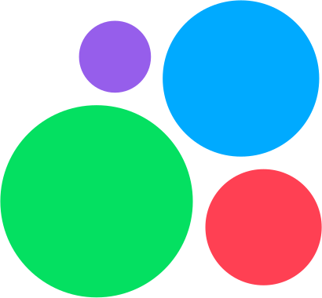

Two palettes, both real
The console's tokens (ago-console/src/design/tokens.css) are the
canonical set — the file's own header calls it "the single source" and traces every value
back to an earlier version of the landing page. The landing page has since been redesigned
around its own, narrower palette (its own stylesheet calls this "a second stylesheet...
this page's redesign changes tokens, type and component shapes wholesale"). Both are shown
below, honestly, rather than picking one and pretending the other doesn't exist.
Console tokens — brand & accent
"the console spends [brand] on exactly one primary action per screen, the active navigation item, links, and the focus ring" — tokens.css's own usage-restraint comment, contrasted there with the landing page, which "paints whole sections" in it. Light values shown; the file also carries a full measured dark palette for each.
Console tokens — status
Danger and warning are kept in the "same darkness band" on purpose, per tokens.css, "so it reads as a sibling of the palette rather than a bootstrap red." Warning is deliberately not danger-toned: "the whole point is that this must not read as a sibling of danger" (25-83's own decision, quoted in tokens.css).
Console tokens — ink & paper
Every pair here "was measured (WCAG 2.1 relative luminance) rather than eyeballed" — tokens.css records the ratio inline for each. Text pairs clear 4.5:1.
Landing's own palette
The front page's current design system (ago-landing/styles.css),
dark-first: "the page was designed as a control panel and reads as one." Not the same values
as the console tokens above — this is the redesign the console's own file predates.
Three families, one job each
Per tokens.css: "Manrope carries the interface, Unbounded is confined to the shell's identity (the wordmark and nothing else — display type in a dense tool is noise), JetBrains Mono is for values that are literally identifiers: conversation/visitor ids, sequence numbers, hex colours."
Console type scale (tokens.css)
"the console drops body to 15px and caps the largest thing on any screen at 22px: an operator reads a queue, not a pitch."
The five real channel marks
Copied verbatim from 25-172's own approved SVG files — not
redrawn, recolored, or re-derived. These are the exact assets AGO Chat ships for each
incoming channel.

Авитоicons/avito.svgUsed at, e.g., AGO Chat's operator queue and the widget's own channel picker — one icon per linked channel identity, never redrawn per surface.
A wordmark, not a mark
There is no separate logo symbol anywhere in ago-landing or
ago-console today — only the "AGO" name, set in the display face, with a small
gradient tile carrying its first letter (ago-landing's own .brand .g
and ago-console's shell wordmark use the identical idea). That wordmark is the
logo for this page's purposes; inventing a new symbol would be adding to the identity, not
documenting it.
The gradient tile runs --blue → --violet in the
landing's own palette (linear-gradient(140deg, var(--blue), var(--violet))) — the same pair
shown in the landing swatches above.